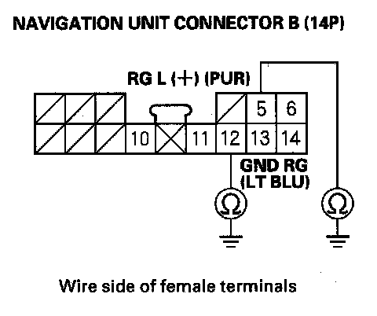

Voice guidance cannot be heard, is broken up, or there is too much static
Voice guidance cannot be heard, is broken up, or there is too much staticDiagnostic Test: Navi System Link
NOTE:
- Check the navigation volume level (see Owner's Manual).
- Always check the connectors for poor connections or loose terminals.
- Before troubleshooting, get the audio system and the navigation system anti-theft codes.
- After troubleshooting, enter the anti-theft codes for the audio system and navigation system.
1. Press the display unit SET-UP button.
2. Check the volume and voice feedback setting for the navigation system in set-up.
Is either set to OFF?
YES - Set the voice feedback to ON and select an audible level for the volume.
NO - Go to step 3.
3. Check the radio operation.
Can you hear the radio?
YES - Go to step 4.
NO - Troubleshoot audio system.
4. Go into the Diagnostic mode, and use the "Navi System Link" diagnostic to check the radio.
Is the "Radio" icon red?
YES - Troubleshoot the audio system.
NO - Go to step 5.
5. Turn the ignition switch OFF.
6. Disconnect navigation unit connector B (14P) and the stereo amplifier connector A (28P).

7. Check for continuity between body ground and navigation unit connector B (14P) terminals No. 5 and No. 12 individually.
Is there continuity?
YES - Repair short to body ground in the wire between the navigation unit and stereo amplifier units. Replace the affected shielded harness.
NO - Go to step 8.
8. Check for continuity between navigation unit connector B (14P) terminal No. 11 and terminals No. 5 and No. 12 individually.
Is there continuity?
YES - Repair short to body ground in the wire between the navigation unit and stereo amplifier units. Replace the affected shielded harness.
NO - Go to step 9.
9. Check for continuity between navigation unit connector B (14P) terminal No. 5 and the stereo amplifier unit connector A (28P) terminal No. 21.
Is there continuity?
YES - Go to step 10.
NO - There is an open in the circuit between the navigation unit and stereo amplifier. Check for poor connections or loose terminals at the stereo amplifier and navigation unit. If a poor connection or loose terminal is found, replace the affected shielded harness.
10. Check for continuity between navigation unit connector B (14P) terminal No. 12 and the stereo amplifier unit connector A (28P) terminal No. 9.
Is there continuity?
YES - Go to step 11.
NO - There is an open in the circuit between the navigation unit and the stereo amplifier. Check for poor connections or loose terminals at the stereo amplifier and navigation unit. If a poor connection or loose terminal is found, replace the affected shielded harness.
11. Substitute a known-good stereo amplifier, and recheck.
Is the system OK?
YES - Replace the stereo amplifier.
NO - Replace the navigation unit.